어린이 동화
눈동자처럼
하나님이 하온이를 밤에도 지켜 주신 날
다시, 푸른골
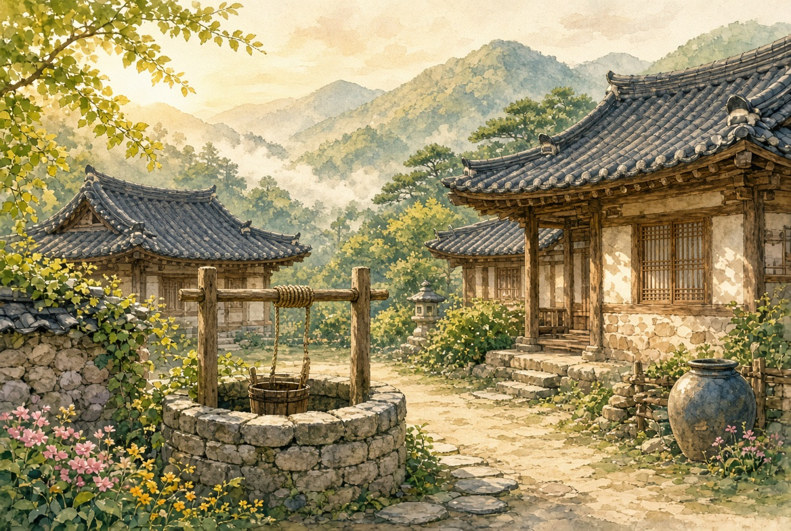
푸른골에는 우물이 하나 있었습니다. 아침이면 사람들이 물을 길으러 모이고, 저녁이면 아이들끼리 놀았습니다. 산도, 시내도, 양 우리 문도 어제와 같았습니다.
하온이 산에서 살아 돌아온 뒤, 만석이는 더 이상 큰 소리를 내지 않았습니다. 검은 양은 밭에서 발견되었고, 하온이가 훔친 게 아니라는 것도 마을이 알게 되었습니다.
그런데 말은 쉽게 죽지 않았습니다.
아직 남은 말
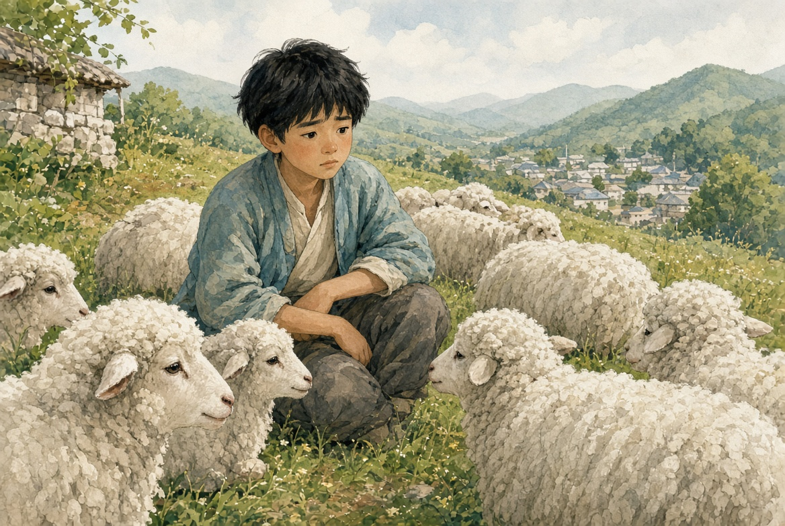
하온은 여전히 양을 쳤습니다. 양은 하온이를 좋아했습니다. 사람은 달랐습니다.
만석이네 집 큰아이 석이, 그리고 석이 친구 둘이 우물가에서 속삭였습니다.
“산에 천둥이 쳐서 살았대. 그래도 양은 저 아이가 숨긴 거야.”
하온이는 그 말을 들을 때마다 배가 아팠습니다. 아니라고 하면, 아이들이 더 크게 웃었습니다. 그래서 하온이는 입을 다물고 양 곁에 앉았습니다.
밤에 아버지는 말했습니다.
“하나님은 사람의 속을 보신다. 겉말만 보지 않으신다.”
하온이는 고개를 끄덕였습니다. 그래도 속이 다 풀리지는 않았습니다.
우물가에서
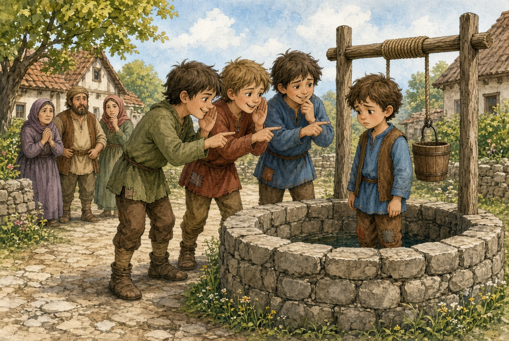
어느 낮, 하온이가 양에게 물을 먹이러 우물에 갔습니다. 석이와 친구들이 벌써 나와 있었습니다. 세 사람이 하온이를 동그랗게 둘러쌌습니다.
“또 뭘 숨겼어? 할머니 보자기도 네가 가져갔지?”
마을 끝집 할머니가 아침나절 보자기에 밀가루를 싸 두었는데, 보자기가 없어졌습니다. 석이는 그 이야기를 하온이 탓으로 붙였습니다.
하온이가 아니라고 하자, 석이가 더 가까이 왔습니다.
“어른들한테 이를 거야. 이번엔 산으로 도망 못 가.”
하온이는 둘러싸이면 말이 잘 나오지 않았습니다. 손이 떨렸습니다. 멀리 어른들이 보고 있었지만, 아이들 싸움처럼 보여 바로 오지 않았습니다.
하온이는 마음속으로만 말했습니다.
“하나님, 제 마음을 봐 주세요. 저 안 가져갔어요.”
눈이 감기지 않는 밤
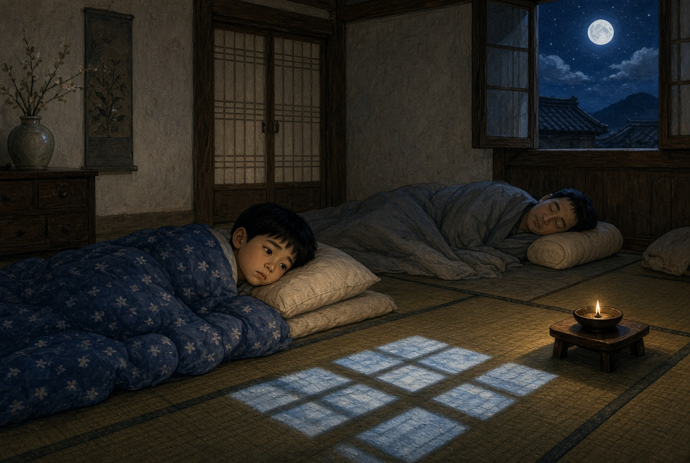
그날 밤 하온이는 잠이 오지 않았습니다. 아버지는 이미 코를 골고 있었습니다. 창으로 달이 들어왔습니다. 작은 등잔이 거의 꺼져 있었습니다.
하온이는 이불을 턱까지 올리고도 눈을 감으면 우물가가 다시 보였습니다. 세 사람이 동그랗게 서는 장면이 반복되었습니다.
하온이는 아주 작은 소리로 말했습니다. 아버지를 깨우고 싶지 않았습니다.
“주님, 제 말을 들어 주세요. 사람들이 제 겉만 봐요. 하나님은 밤에도 제 속을 보시면 아시잖아요.”
속마음을 보여 드리는 기도
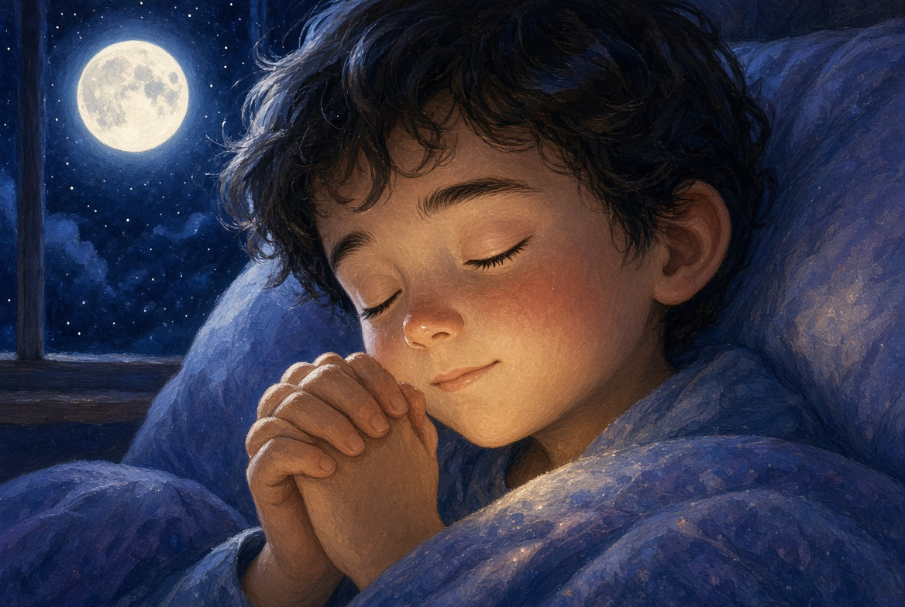
하온이는 두 손을 모았습니다. 긴 기도를 외우지는 못했습니다. 아는 말이 짧았습니다.
“하나님, 제가 보자기도 안 가져갔고, 양도 안 숨겼어요. 제 마음이 바른지 밤에도 봐 주세요. 저 혼자 있으면 무서워요. 주님, 저를 지켜 주세요.”
말은 짧았지만, 그 안에 낮의 우물과 떨리던 손이 다 들어 있었습니다.
날개 그늘
하온이가 눈을 감았을 때, 방이 조금 따뜻해지는 것 같았습니다. 누가 이불을 한 겹 더 덮어 주는 느낌이었습니다.
꿈인지 생시인지는 하온이도 몰랐습니다. 다만 큰 날개가 아이를 가려 주었습니다. 날개는 하얗고, 끝은 노란빛이었습니다. 바람도, 우물가의 말도, 그 아래에서는 작게 들렸습니다.
마음속에서 이런 말이 스쳤습니다.
“내가 너를 숨겨 주마. 내 날개 그늘 아래 있어라.”
하온이는 그 말을 다 이해하지 못했습니다. 그저 등이 덜 시렸습니다.
눈동자 안에
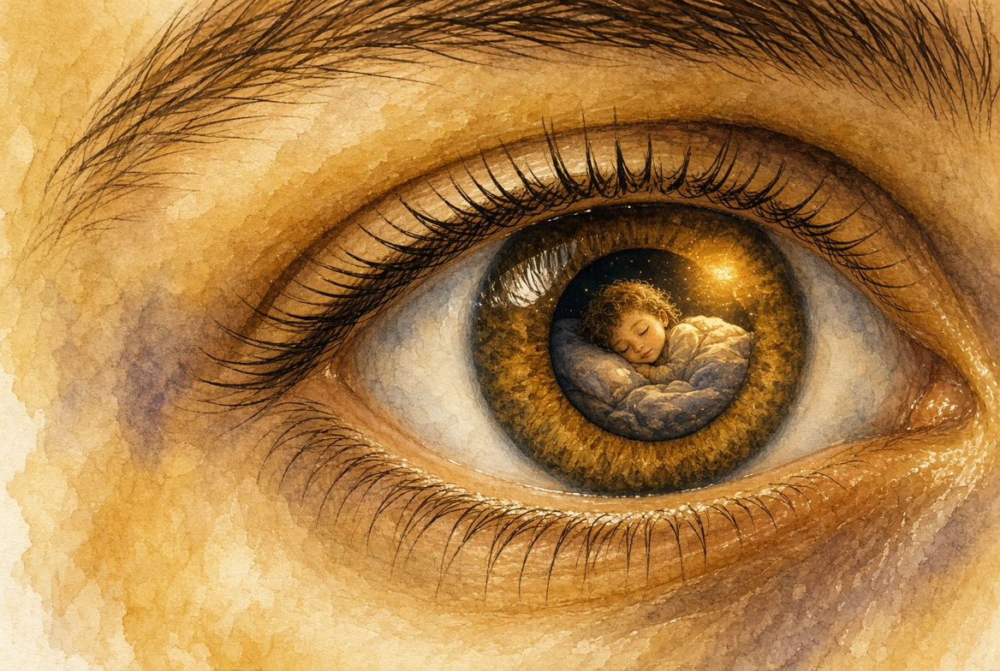
아버지는 예전에 이런 말을 한 적이 있었습니다. 하나님이 사람을 눈동자처럼 지키신다고요. 하온이는 그 말이 어려웠습니다. 눈동자가 어떻게 사람을 지키는지 몰랐습니다.
그날 밤 하온이는 문득 생각했습니다. 눈 안에 작은 내가 들어가 있는 그림이었습니다. 하나님이 눈을 깜빡일 때마다, 먼지와 나쁜 말이 못 들어오게 가려 주는 것 같았습니다.
“주님, 저를 그렇게 봐 주세요. 놓치지 말아 주세요.”
담장 밖의 발소리
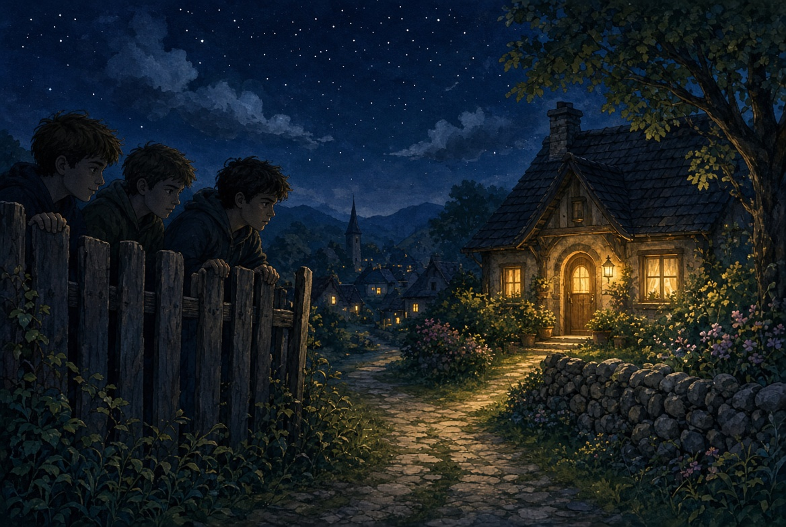
같은 시각, 석이와 친구들은 하온이네 담장 밖에 있었습니다. 보자기는 사실 석이 가방 안에 있었습니다. 낮에 할머니 마당에서 장난으로 집어 온 것이었습니다. 들키면 큰일났습니다. 그래서 밤에 하온이네 양 우리 앞에 두고, 아침이면 “하온이가 숨겼다”고 말하려 했습니다.
그런데 담장 안 집이 이상하게 환했습니다. 등잔이 꺼져 있는 것 같은데, 창으로 따뜻한 빛이 보였습니다. 석이가 문을 밀려고 하다 멈췄습니다. 들어갈 용기가 나지 않았습니다.
세 사람은 보자기도 못 내려놓고 돌아갔습니다. 가방 안에서 보자기가 구겨져 있었습니다.
하온이는 그 발소리를 듣지 못했습니다. 날개 그늘 아래에서 숨이 고르게 쉬어지고 있었습니다.
아침, 우물가
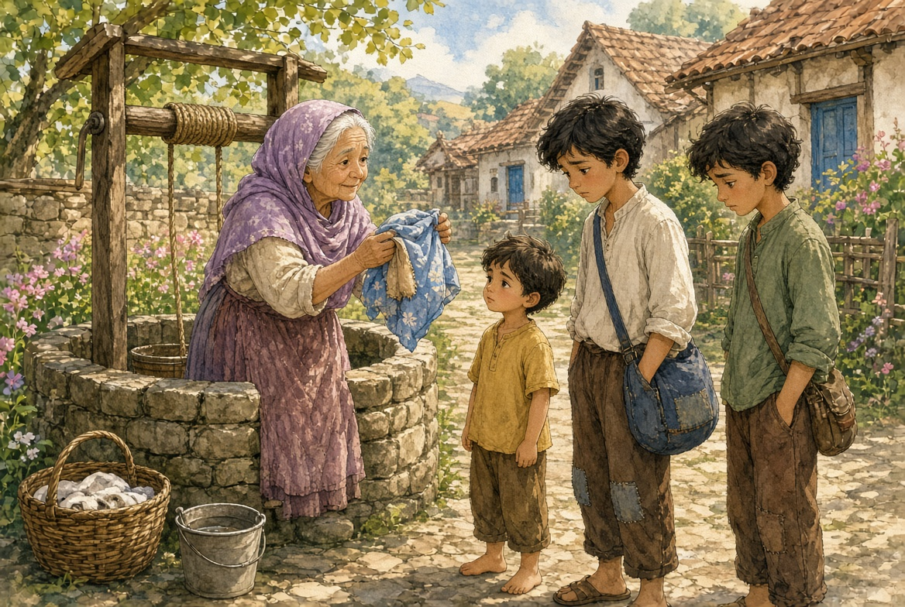
다음 날 아침, 할머니가 우물가에 나와 있었습니다. 석이 가방에서 밀가루 묻은 보자기가 보였습니다. 할머니가 그것을 꺼내 펼쳤습니다.
“이 보자기, 내 것이다. 석이야.”
석이와 친구들은 고개를 숙였습니다. 하온이는 그 자리에 늦게 도착했습니다. 양에게 물을 먹이러 온 것이었습니다. 어른들이 이미 이야기를 듣고 있었습니다.
석이는 하온이를 보지 못했습니다. 하온이도 큰 소리를 내지 않았습니다. 다만 마음속으로 말했습니다.
“하나님, 제 마음을 봐 주셨네요.”
아버지와 걷는 길
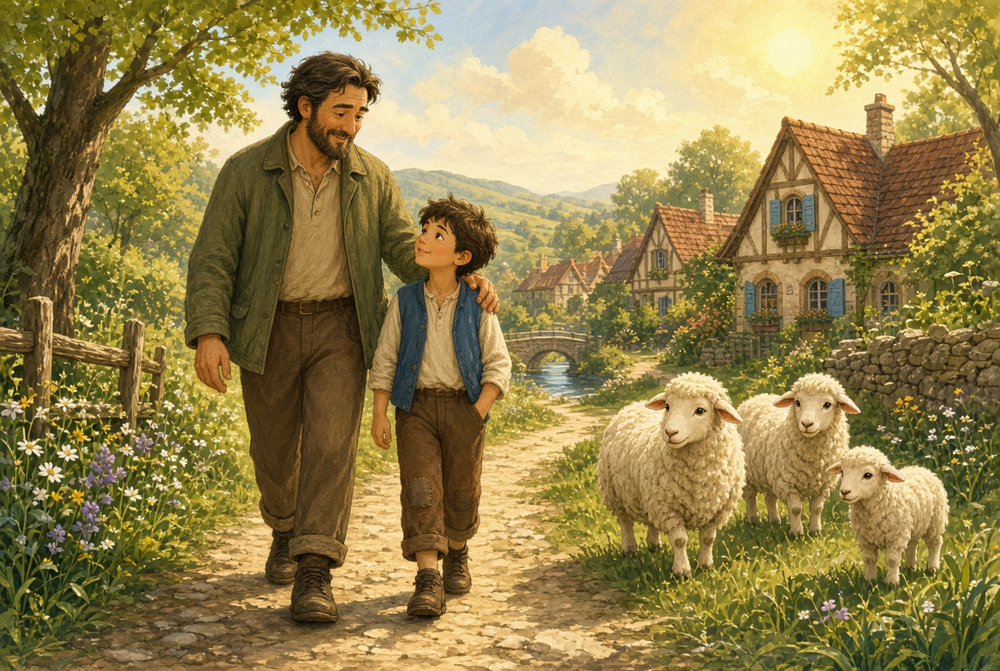
아버지는 하온이의 어깨에 손을 올리고 함께 걸었습니다. 양은 앞에서 천천히 걸었습니다.
“사람들이 너를 둘러쌀 때도, 하나님은 너를 혼자 두지 않으신다. 눈동자처럼 보셨다.”
하온이가 물었습니다.
“눈동자가 뭐예요?”
아버지가 웃었습니다.
“눈에 티끌이 들어가면 바로 깜빡이잖아. 하나님이 너를 그렇게 아낀다는 말이다.”
하온이는 그제야 조금 알 것 같았습니다.
눈을 뜨면
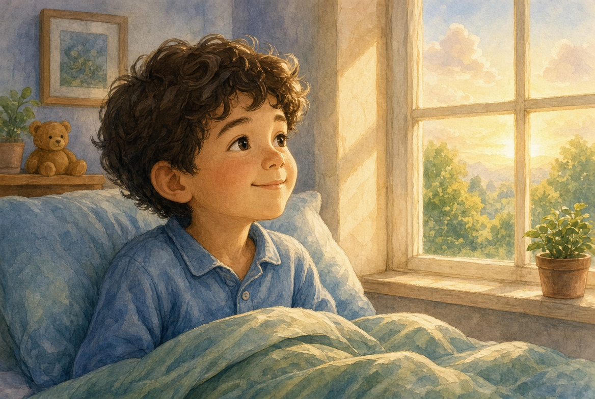
그날 하온이는 낮잠을 잤다가 창가에서 눈을 떴습니다. 해가 얼굴을 따뜻하게 비추었습니다.
무섭던 우물가는 멀리 있었습니다. 방은 조용했고, 양은 우리에서 울었습니다. 하온이는 이상하게 배가 고프지 않았습니다. 배가 아니라 마음이 차 있는 느낌이었습니다.
“주님, 제가 눈을 뜨니까 아직 여기 계세요.”
그 말이 하온이가 할 수 있는 가장 긴 찬양이었습니다.
다시 잠들기 전에
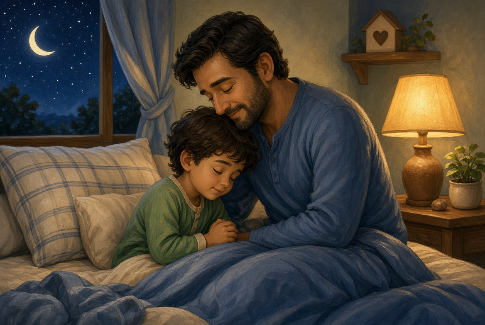
그날 밤, 아버지와 하온이는 등잔 앞에서 짧게 말했습니다.
“하나님, 하온이 말을 들어 주셔서 감사합니다. 사람들이 둘러쌀 때에도 지키셨습니다. 눈동자처럼 보시고, 날개 그늘 아래 두셔서 감사합니다. 우리는 약해도 주님은 강하십니다.”
하온이는 이불을 턱까지 올리고 속삭였습니다.
“하나님, 내일 또 누가 둘러싸도, 주님이 뒤에 계시면 괜찮아요.”
등잔이 깜빡였습니다. 아버지는 이미 숨이 고르고, 하온이 등도 따뜻했습니다. 창밖의 달은 우물 위에 동그랗게 앉아 있었습니다.